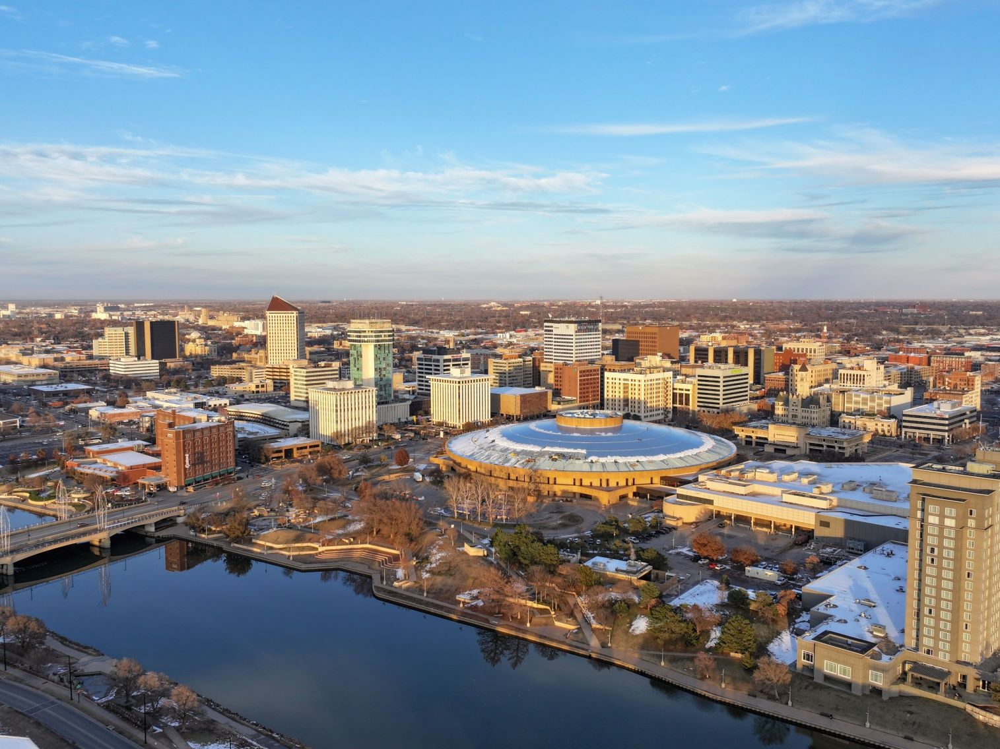
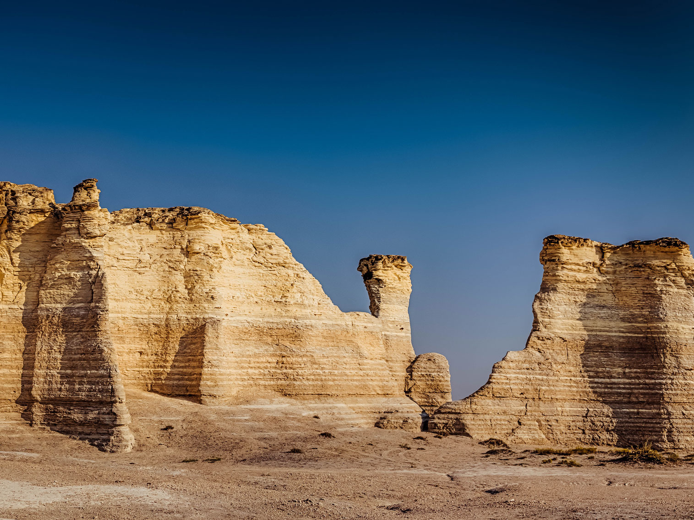
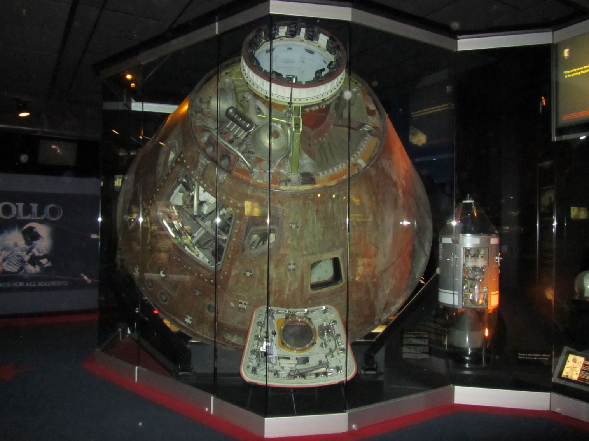
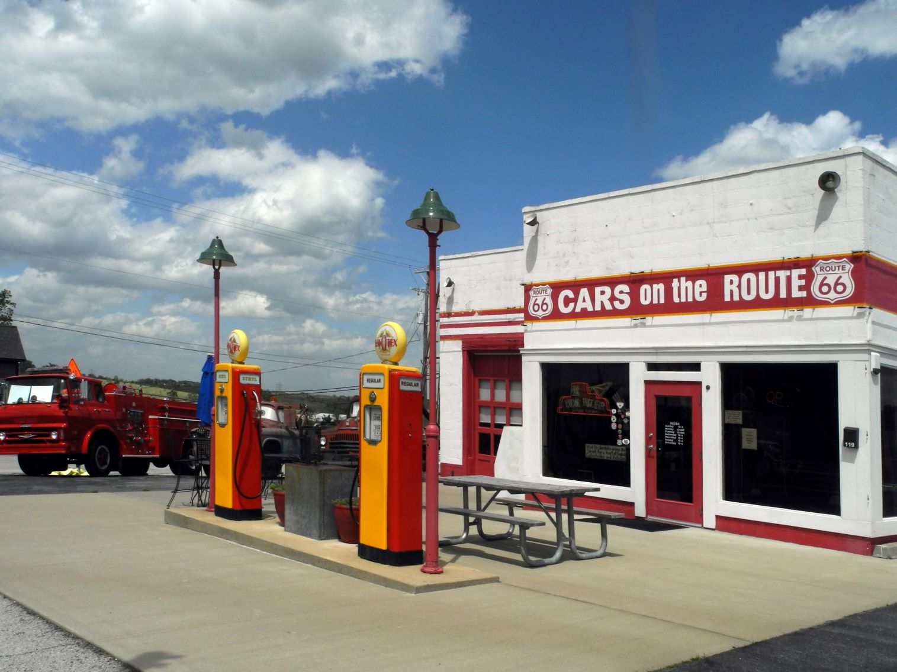

Kansas Travel Guide
Roam the Flint Hills' tallgrass prairie, explore Wichita's museums, and follow historic cattle trails across Kansas' wide-open Great Plains scenery.
Places to See in Kansas

Wichita Skyline
Wes15560, CC BY-SA 4.0, via Wikimedia Commons; Image Size Adjusted


Travertine Creek Swimming Area, Chickasaw NRA
jonathan c. wheeler, CC BY-SA 3.0, via Wikimedia Commons; Image Size Adjusted


Broken Bow Spillway, Beavers Bend Resort ParkU.S. Army Corps of Engineers, photographer not specified or unknown, Public domain, via Wikimedia Commons; Image Size Adjusted


Monument Rocks
Wes15560, CC BY-SA 4.0, via Wikimedia Commons; Image Size Adjusted


Monument Rocks
Wes15560, CC BY-SA 4.0, via Wikimedia Commons; Image Size Adjusted
Museums
- Big Brutus★
- Big Well Museum★
- Boot Hill Museum★
- Buffalo Bill Cultural Center★
- Cosmosphere★
- Dwight D. Eisenhower Presidential Library and Museum★
- Flint Hills Discovery Center★
- Galena Mining and Historical Museum★
- Lindsborg Old Mill and Swedish Heritage Museum★
- Oz Museum★
- S. P. Dinsmoor's Garden of Eden★
- Strataca Underground Salt Museum★
- St. Fidelis Basilica★

Monument Rocks
Wes15560, CC BY-SA 4.0, via Wikimedia Commons; Image Size Adjusted
Route 66 Attractions
Overview
Kansas is a Midwestern state of about 2.9 million people at the geographic center of the contiguous United States. Its capital is Topeka and its largest city is Wichita. The state is named for the Kansa (Kaw) people, and its identity is closely tied to wide-open prairie, Wild West history, and Dorothy Gale of The Wonderful Wizard of Oz.
Travelers come to Kansas for the Flint Hills, the largest remaining expanse of tallgrass prairie in North America; for frontier history in Dodge City and along the Santa Fe Trail; for chalk formations such as Monument Rocks and Little Jerusalem Badlands; and for museums such as the Cosmosphere in Hutchinson, the Oz Museum in Wamego, and the Eisenhower Presidential Library in Abilene. Route 66 also clips the state's southeast corner for about 13 miles.
Geography
Kansas lies in the Great Plains and rises gradually from east to west. The eastern third of the state has rolling hills, forests, and the Flint Hills, while the central Smoky Hills and the Red Hills (Gypsum Hills) give way to the flat High Plains of the west. Mount Sunflower, at 4,039 feet (1,231 m), is the highest point, and the Kansas, Arkansas, and Smoky Hill Rivers drain the state. Wheat, corn, sorghum, and soybeans make Kansas one of the nation's top agricultural states.
History
The Kansa, Osage, Pawnee, Wichita, and other nations lived on the plains when the Coronado expedition passed through in 1541. The region became part of the United States in the Louisiana Purchase of 1803, and Fort Leavenworth, founded in 1827, was the first Euro-American settlement. The Kansas-Nebraska Act of 1854 opened the territory and set off "Bleeding Kansas," a violent struggle over slavery, before Kansas became the 34th state on January 29, 1861. Cattle drives made Abilene and Dodge City famous in the 1870s, formerly enslaved settlers founded Nicodemus in 1877, and the 1954 Brown v. Board of Education decision originated in Topeka.
The Great Plains in Kansas
Kansas is the heart of the Great Plains, and its landscapes are far more varied than the "flat" reputation suggests. The Flint Hills in the east contain the last large expanse of tallgrass prairie in North America, protected at Tallgrass Prairie National Preserve and the Konza Prairie, where ranchers still burn the grass each spring. The Gypsum Hills in the south-central part of the state have red buttes and mesas, the chalk formations of Monument Rocks and Little Jerusalem Badlands rise from the shortgrass prairie in western Kansas, and Castle Rock and Mushroom Rock show sandstone sculpted by wind. Farther west, the High Plains are flat and dry, with wheat fields, grain elevators, and the Syracuse Sand Dunes. Wildlife such as bison, prairie chickens, pronghorn, and migrating cranes and waterfowl can be seen, and the Maxwell Wildlife Refuge has a herd of bison and elk. The Santa Fe Trail also crosses the plains, and wagon ruts survive at the Santa Fe Trail Tracks site.
Wichita
Wichita is the largest city in Kansas, on the Arkansas River in the south-central part of the state, with a metro population of about 650,000. It earned the nickname "Air Capital of the World" for its aircraft industry, which includes Cessna, Beechcraft, and Learjet, and the Kansas Aviation Museum tells the story. Wichita began as a cattle town and trading post in the 1860s, and Old Cowtown Museum recreates an 1870s frontier town with costumed interpreters. The Keeper of the Plains, a 44-foot steel sculpture by Blackbear Bosin at the confluence of the Arkansas and Little Arkansas Rivers, is the city's best-known landmark. Other attractions include the Wichita Art Museum, Exploration Place science center, Botanica, and Old Town, a warehouse district of restaurants and shops. Wichita is also the birthplace of Pizza Hut, founded there in 1958.
Topeka
Topeka, the state capital, sits on the Kansas River in northeast Kansas and is best known for its role in the civil rights movement. In 1954, the landmark Supreme Court case Brown v. Board of Education of Topeka ended legal segregation in public schools, and the Brown v. Board of Education National Historical Park is housed in the former Monroe Elementary School, one of the segregated Black schools involved in the case. The Kansas State Capitol has a dome that visitors can climb and murals of John Steuart Curry depicting the abolitionist John Brown, and the Kansas Museum of History tells the story of the state. The Great Overland Station is a restored Union Pacific depot, and the Combat Air Museum and American Flight Museum display military and civil aircraft. Nearby Lawrence, home of the University of Kansas, has the Massachusetts Street shopping district and the Spencer Museum of Art.
Route 66 in Kansas
Kansas has the shortest stretch of Route 66 in any state, just 13 miles in the far southeastern corner of Cherokee County, but it packs in a lot of nostalgia. The road passes through the former lead and zinc mining towns of Galena, Riverton, and Baxter Springs. In Galena, Cars on the Route, a restored 1930s gas station, features the tow truck that inspired Mater in Pixar's Cars, along with other vintage vehicles. The Galena Mining and Historical Museum is in a former railroad depot, and Route 66 Cruisers and Nelson's Old Riverton Store, which has been serving customers since 1925, are classic stops. The Rainbow Bridge, a 1923 concrete arch bridge over Brush Creek, is the last remaining marsh arch bridge on the route, and the Kansas Route 66 Visitors Center in Baxter Springs provides maps and history. The route is part of a Kansas Scenic Byway, and visitors can see it in under an hour.
National Protected Areas
Kansas has several National Park Service sites. The Brown v. Board of Education National Historic Site in Topeka tells the story of school desegregation, Fort Larned and Fort Scott are well-preserved frontier military posts, and Nicodemus is the oldest remaining western town established by Black settlers after the Civil War. The Tallgrass Prairie National Preserve near Strong City protects a historic ranch and native prairie. The Santa Fe, Oregon, California, and Pony Express National Historic Trails and the Lewis and Clark Trail also cross the state.
State Parks and Historic Sites
State-managed sites highlight the prairie and the frontier. Fort Hays State Historic Site preserves an 1860s Army post, the Pawnee Indian Museum sits on an actual Pawnee village site, and Mushroom Rock and Little Jerusalem Badlands offer striking rock formations. Cedar Bluff and Wilson State Park are popular lake and hiking areas, and the Konza Prairie has hiking trails through the Flint Hills.
Seasons and When to Visit
Spring brings Flint Hills prairie burning, wildflowers, and migrating birds, as well as the state's severe storm and tornado season. Summer is hot but ideal for lakes, rodeos, and county fairs, fall brings pleasant weather and golden prairie grasses, and winter is cold and often dry, with fewer visitors and good birdwatching, including eagles near the reservoirs. Late spring through early fall is the best time for road trips along scenic byways and the Santa Fe Trail.
This article uses material from the Wikipedia article "Kansas" which is released under the Creative Commons Attribution-Share-Alike License 3.0. Additional sources: National Park Service, Kansas Department of Wildlife and Parks, Kansas Historical Society, and Travel Kansas.